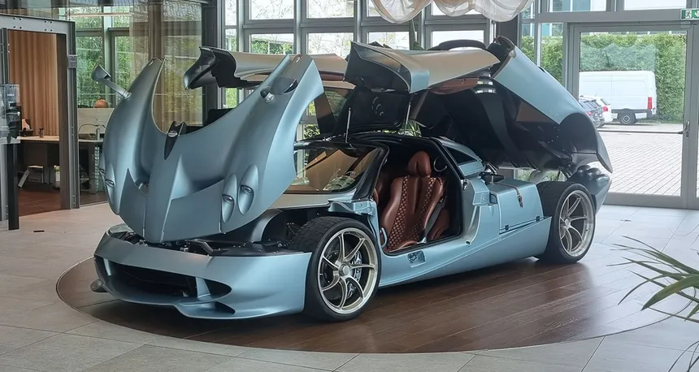

Pagani huayra:El pagani huayra es un coche de alto rendimiento, fue diseñado por Horacio Pagani y utilizando un v12 de Mercedez Benz saliendo en febrero de 2011
Pagani huayra BC:El Pagani Huayra BC es una variante del huayra, lanzado en marzo de 2016 con um motor v12 biturbo de Mercedes-AMG con 802CV de potencia y con un peso de tan solamente 1T y 250KG, Este peso es ligero debido a la fibra de carbono que posee, ya que es un material muy resistente y ligero, perfecto para crear coches
